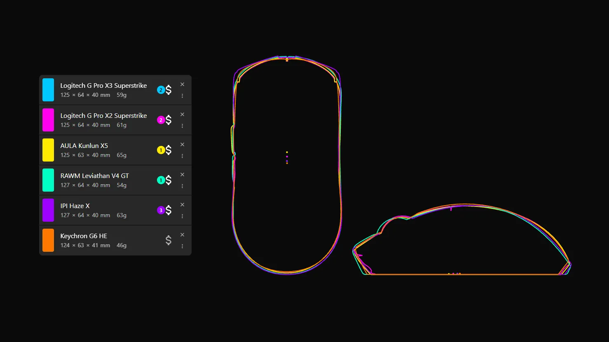

자석스위치+햅틱모터 달려있는 마우스는 전부 지슈스 쉘임 ㅋㅋㅋㅋㅋ
카피쉘이라도 변형이라도 조금 넣고 쉘크기라도 다르게 하는게 아니라 전부 99% 카피쉘로 나오는중
로지텍 제품군들 대부분이 중국 OEM 생산이라서 언젠가는 벌어질 일이었는데, 이건 너무 하잖아 ㄷㄷㄷ
당연히 히어로 센서나 로지칩 MCU는 안넣었지만 오히려 다른의미로 업그레이드되서 나오는중(광학 휠엔코더,광학스위치-마그넷스위치 듀얼모드)
한줄요약 : 크기라도 줄이고 자신만의 특징이라도 넣더니 이제 아예 포기하고 카카시하는구나
햅틱 처음 보고 뭐 진동인가 했는뎅